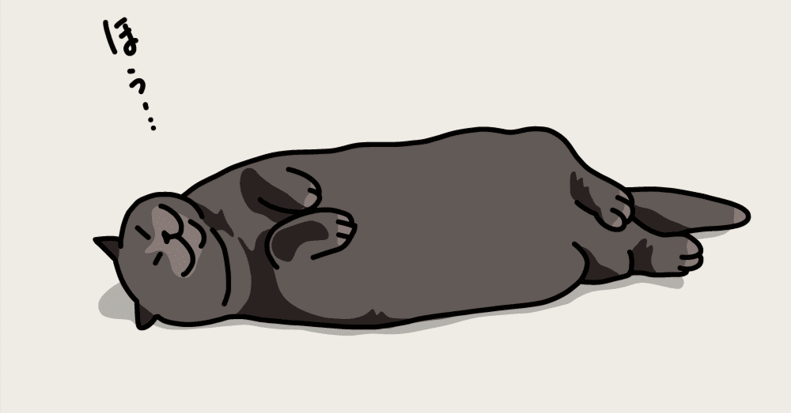

海人君。突然だけどさ、今度ゴールデン帯で特番やるんだけど、よかったら司会やってみない？
楽屋に入ってくるなりそう言い放ったのは、局内でその名を知らぬ者などいない、ある敏腕プロデューサー。
もちろん、まだ新米に過ぎない僕が断る理由などない。その場は歴の浅い新人よろしく、「不束者ですが、精一杯頑張ります！」と即座に立ち上がり彼に頭を下げた。
その様子を見た彼は、意のままに事態が進んだことに安堵した様子で「期待しているよ」とだけ言い残して、颯爽とドアの向こうへと消えていった。
中々その姿を見せないことで有名な彼の残り香を感じつつ、頭にはある疑問が浮かぶ。
昨今、局が最も力を入れているゴールデンの特番に、なぜ自分が司会に抜擢されたのか。しかも、強豪ぞろいのこの世界で、トークスキルなどゼロに等しいこの僕が。しかし、そんなこといくら考えたってわかるはずもなかった。
でも、やがて僕は知ることになる。その裏には、表には決して出ることのない深い闇が関わっていることを。もちろん、この時の僕は知る由もない。
冒頭から何の茶番だと思われたことだろう。
もちろん、上記に書かれている内容は質の悪いフィクションなのだが、ゴールデン帯の特番＝“社内の大きなプレゼン大会”、敏腕プロデューサー＝“僕が所属している部署の部長”と読み替えてもらえたら摩訶不思議。ぴったり事実になる。
このコロナ渦で数年余り開催を見送られていた社内のプレゼン大会が、今年から復活する。
社長や取締役を含む社の全員が社員の発表を聴き、5~6人で1チームとなる各々が自社商品に関するテーマに沿いながら魅力的なプレゼンテーションをし、部課長級以上がそれを講評する。かれこれ20年近く行っているらしい、伝統行事だ。
現在31歳の僕だが中途で入社しているため初めての大会参加だったものの、実は発表チーム内のリーダーにも抜擢されていた。
日々の業務をこなしながら、チーム内の様々な年代のメンバーが秘める思惑も汲みつつ、なんとかプレゼン内容が固まりホッとしていた矢先、冒頭のようなことが起きたというわけだ。
「ただの進行だけとは言ってたけど、数百人が観ている中だとさすがに緊張しそうだなぁ」
正直な気持ちはこんなものである。
しかし、もしかしたら司会をやりたかった人もいるかもしれない中、仲のいい同僚や上司につい「いやぁ、なんか司会任されちゃったんだけどダルくてさー」なんてこぼしてしまったら最後、そんなふざけた態度が司会希望者の耳に入り怒りを買ってしまうこともあり得るから、本当の気持ちは誰にも明かせず仕舞いだった。
ええい！ すでに引き受けてしまったのだ。やるしかない！
水面下で司会者に任命されてひと月ほどが過ぎたある日、僕はようやく腹を括った。そして、決して大したものではないが、魅力的な司会者への変貌を試みたその軌跡を、今日は皆さんにお伝えしたい。
まず僕が取り掛かったのが、発声練習。
普段から誰かに何かを伝えようとするたび、「え？」や耳に手をやる仕草をされる僕にとって、確実に言葉を届ける発声は必要不可欠な工程だった。
当日はマイクが用意されているものの、聞き取りやすい声を出す生活とは縁遠い暮らしの連続のため、まずはYouTubeに転がっている発声に関する動画を再生しその方法を身につける。
お腹から声を出す“腹式発声”という古来よりの伝統的な手法をリピートするのはもちろん、近所のカラオケボックスに繰り出し実際にマイクを通した声をスマホで録音、聞きやすさや声の明るさにも気を配る。いやぁ、本当にプロのアナウンサーや歌手、そのほか人前で声を出す仕事をするすべての人には頭が下がる思いだ。
こうした日々を越えて発声が最低限のレベルに達したら、次に記憶力の向上に手を伸ばす。
司会者たるもの、当日はテレビみたいにカンペは出ないし手元のメモ帳にも限度があるから、記憶力はあって損はない。
記憶力テストなるものをたくさん受け、単純な単語から一定の文章を空で言えるように繰り返す。ちょっとした台本を作成し、それをさっき行った正しい発声でとにかく練習！ もうこれは、かけた時間がものを言う世界なのだろう。
そして、ここからは蛇足になるやも……と一抹の不安を抱えながらも、「やはり司会者にはユーモアがなければ！」と思い至り、片っ端から今を輝くお笑い芸人のコントや人気バラエティー番組、一発ギャグ的なネタを頭に刷り込ませていく。
「へぇ、今はこういうのが若い世代に流行ってるんだなぁ」と呑気なことを言いながら、ひとつひとつをゆっくりと体に馴染ませる。そのたびに、テレビや劇場で不特定多数を笑わせる芸人って本当にすごい人たちなんだなと改めて実感する。
と同時に、それらを繰り返し視聴するたび、「寒いギャグだけは言うなよ、海人」と自戒を込めた。笑いは取れなくても、滑るのだけはどうにか避けたい。実に欲深い人間の有り様である。
司会者道への練習も、いよいよ終盤。仕上げに、著名な司会者の流れるような進行ぶりを映像で確認する。
明石家さんまやタモリ、中居正広に安住紳一郎……雲の上の面々に「いや、観たところでなれるわけないだろ！」とツッコミが入りそうだが、司会者界のてっぺんを知っておきたいという気持ちもあった。
結論、そのどれもが超人的な司会ぶりで全く参考にならなかった。うん……そりゃそうよね(笑)
中居くんなんて25歳で紅白初司会だって……すごすぎて何も言えないよ！(もはや視聴者側の、ただの感想)
そんなこんなで準備も万端！(？)
いざ、本番へ。当日の朝はまるで食事が喉を通らなかったが、そんなことはお構いなしに時間は平等に進んでいく。昼過ぎから会場入りし、念入りにリハを重ねる。思い返せば、ほかにもっとすべきことはあったような気もするが、当日の僕は何度も何度も段取りを確認しながら、リハを入念に行うことしかできなかった。
5分、4分、3分……刻々と本番までのカウントダウンが迫っている。もうやれることは全部やった、と思い込む。胸を張って、この責務を果たすしかない！
そう意気込む僕の視界にふと、あの日楽屋で司会を打診してきたプロデューサーの姿が目に入った。誰かと親しげに話しているが、あれは……と考えているうちに近くにいたADが大きな声を張り上げる。
本番10秒前！……5、4、3、2……
ADのジェスチャーと、“放送中”を意味するライトが赤く光ったのを確認すると、僕は明るく番組名を口にした。
まずは横にいる女性アナウンサーとの掛け合い。しっかりと説明すべきことは伝えながら、少しはにかんでしまいそうな素朴なユーモアを織り交ぜる。そして、あくまで自然な笑顔を意識しながら共演者に話を振る。よし、いいぞ、ここまでは練習の甲斐があった！
順調に番組を進行させながら、VTR振りをした後、愛くるしい動物たちのＶを観ている最中にあることに気がついた。
放送直前にあのプロデューサーと話していたのは、事務所の先輩、Y(事実でいうところの課長)ではないか！？
今なお画面上ではカピバラの親子が仲睦まじい様子を見せているが、そんな平和な様子を噛みしめることは残念ながらできなかった。
頭の中ではあの2人の顔が交互に思い浮かぶ。ワイプで自分の顔が抜かれるたび笑みを浮かべるものの確実にうまくいっていないだろうという確信と、司会者になってしまったプロセスへの悪い予感を秘めながらＶが明ける。
さっきよりも不自然な笑顔になりながら、台本通りひな壇に感想を振る。中堅芸人のボケにツッコミながら、ふと頭の片隅で思い出した。
「僕、これからはがむしゃらに実績作っていきたいです！ なんでもやりますから！」
これは数ヶ月前に行われた、あるドラマでの打ち上げ(本当は所属している課の飲み会)でYに言った、僕の言だ。
実のところ、Yの僕への印象はさほどよくなかった。毎日真面目に仕事をこなしているはずなのに希望通りの想定になっていないのは、恐らくYが、表立って自分を売り込む後輩を可愛らしく思うタイプだということも薄々感づいていた。そして、うちの事務所ではYに気に入られないと売れる(＝昇格する)ことが難しいことも。
そんな背景から、僕はお酒に酔った勢いで上述の発言をYにぶつけたのだった。そう言っておけば、やる気も伝わることだろうとあの時は軽い気持ちで考えていたが、まさか本当に行動に移されていたとは……。
ん？ ということは……今、僕が慣れない司会に奮闘しているのは身から出た錆！？ おいおい、待ってくれよ。そりゃないぜ……。
「さあ！ 張り切ってまいりましょう！ 次のコーナーは、皆さんお待ちかねのこちら！」
カメラに目を向けているから、その姿に焦点は合わないものの、Yとプロデューサーはきっと満足そうな表情をしていることだろう。
自分が蒔いた種とはいえ、“司会”をしている時に“視界” に入れたくない2人だ……このためにかけてきた時間や労力による徒労感とともに、不用意に身に着けてしまったどうしようもないユーモアセンスも、どこかに置いていきたいよー。